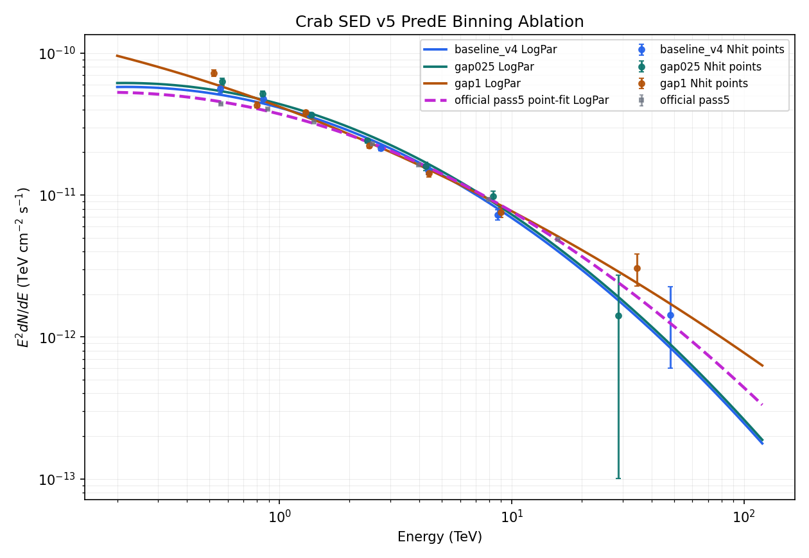
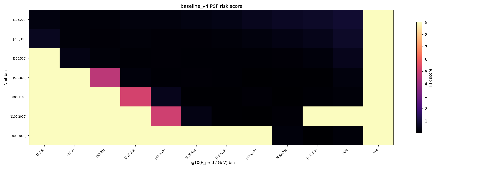
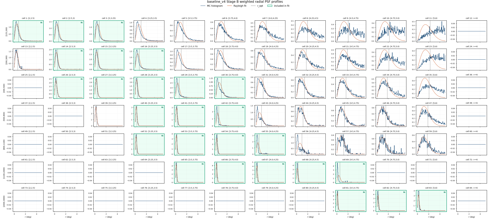
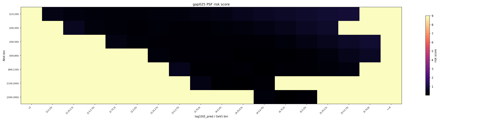
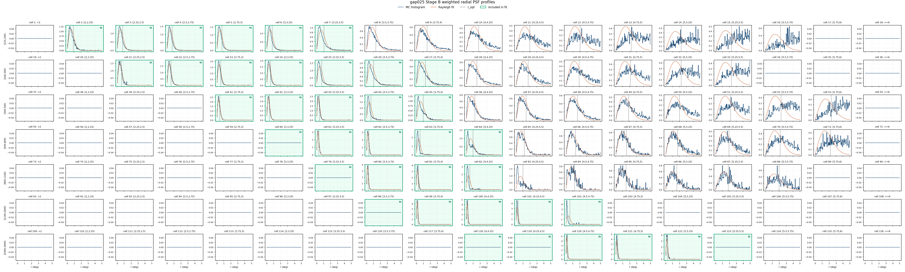
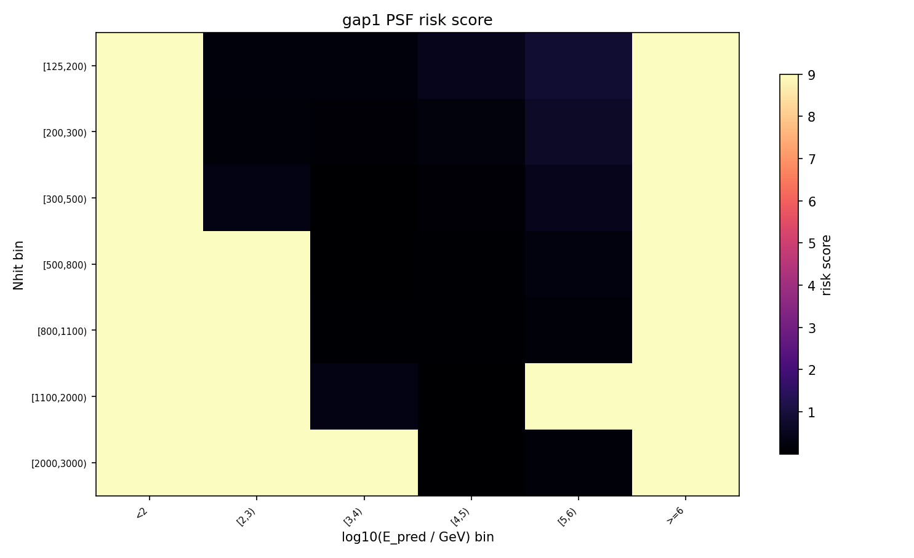
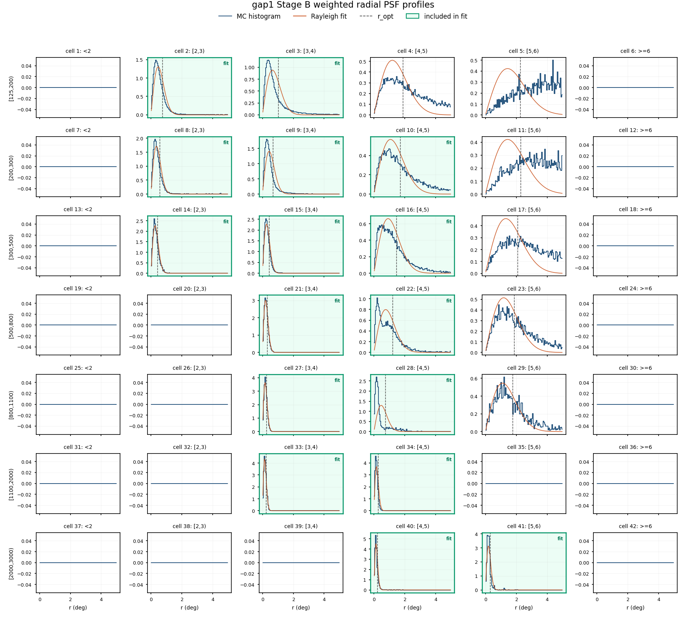

Crab SED v5 PredE 分箱消融报告
对比 baseline_v4、gap025 与 gap1 三套 log10(E_pred/GeV) 分箱。gap025/gap1 使用独立 prefit MC selector，主 fit 排除 <2 和 >=6 尾箱；PSF 风险仅标注，不后验删除。
Generated: 2026-06-30 15:35:24
汇总
| strategy | status | fit cells | PSF risk cells | LogPar phi0 | alpha | beta | chi2/ndof | max pull | low-Nhit pass5 ratio |
|---|---|---|---|---|---|---|---|---|---|
| baseline_v4 | complete | 26 | 56 | 2.3678e-12 | 2.7615 | 0.14536 | 117.29/23 | 5.538 | 1.285 |
| gap025 | complete | 38 | 95 | 2.505e-12 | 2.7631 | 0.14479 | 156.51/35 | 4.967 | 1.435 |
| gap1 | complete | 16 | 29 | 2.2363e-12 | 2.7298 | 0.056789 | 110.23/13 | 5.605 | 1.648 |
Status 为 pending 时表示对应 Slurm 全量产物还没生成；脚本会在产物出现后自动纳入同一张报告。
SED Overlay

The official pass5 curve is an unweighted log-space LogPar fit to the plotted official pass5 SED points.
Final Nhit Flux Point Diagnostics
baseline_v4 uses the
conservative_7bin final flux points from the migration report; gap025 and gap1 use their final Stage G grouping=nhit points. 相对误差 is E2_dnde_err / E2_dnde; significance is excess/error for baseline_v4 and equivalent flux/error for the Stage G rows. pass5 ratio uses log-log interpolation of the official pass5 SED points at the listed median/effective energy.baseline_v4
| 点 | Nhit bin | E_med [TeV] | significance | 相对误差 | pass5 ratio |
|---|---|---|---|---|---|
| 1+2+3 | [125,200) | 0.454 | 14.7σ | 6.8% | 1.35 |
| 14+15+16 | [200,300) | 0.724 | 22.9σ | 4.4% | 1.26 |
| 26+27+28+29+30 | [300,500) | 1.17 | 30.8σ | 3.3% | 1.14 |
| 40+41+42 | [500,800) | 2.43 | 23.1σ | 4.3% | 0.966 |
| 52+53+54+55 | [800,1100) | 3.96 | 17σ | 5.9% | 1.05 |
| 65+66+67+68+69 | [1100,2000) | 8.09 | 13.2σ | 7.6% | 1.03 |
| 81+82+83 | [2000,3000) | 46.3 | 2.13σ | 46.9% | 0.704 |
source: v5_migration_binning_groups.csv / conservative_7bin
gap025
| 点 | Nhit bin | E_med [TeV] | significance | 相对误差 | pass5 ratio |
|---|---|---|---|---|---|
| 2+3+4+5+6+7 | [125,200) | 0.567 | 16.9σ | 5.9% | 1.44 |
| 21+22+23+24+25+26+27 | [200,300) | 0.848 | 25.7σ | 3.9% | 1.28 |
| 41+42+43+44+45 | [300,500) | 1.37 | 32σ | 3.1% | 1.11 |
| 60+61+62+63+64 | [500,800) | 2.38 | 24.8σ | 4.0% | 1.01 |
| 79+80+81+82 | [800,1100) | 4.27 | 14.3σ | 7.0% | 1.03 |
| 98+99+100+101+102 | [1100,2000) | 8.34 | 12.2σ | 8.2% | 1.11 |
| 118+119+120+121+122+123 | [2000,3000) | 28.8 | 1.08σ | 92.9% | 0.29 |
source: Stage G summary.csv / grouping=nhit
gap1
| 点 | Nhit bin | E_med [TeV] | significance | 相对误差 | pass5 ratio |
|---|---|---|---|---|---|
| 2+3 | [125,200) | 0.521 | 19.7σ | 5.1% | 1.65 |
| 8+9+10 | [200,300) | 0.801 | 21.2σ | 4.7% | 1.05 |
| 14+15+16 | [300,500) | 1.3 | 34.1σ | 2.9% | 1.12 |
| 21+22 | [500,800) | 2.44 | 26.5σ | 3.8% | 0.947 |
| 27+28 | [800,1100) | 4.41 | 16.4σ | 6.1% | 0.947 |
| 33+34 | [1100,2000) | 8.99 | 13.3σ | 7.5% | 0.914 |
| 40+41 | [2000,3000) | 34.7 | 3.88σ | 25.8% | 0.628 |
source: Stage G summary.csv / grouping=nhit
Stage B Rayleigh PSF Diagnostics
baseline_v4


| cell | Nhit | predE | Neff | missing theta | sigma deg | r_opt deg |
|---|---|---|---|---|---|---|
| 1 | [125,200) | [2,2.5) | 1.005e+04 | 0 | 0.4947 | 0.7816 |
| 4 | [125,200) | [3.25,3.5) | 2.251e+04 | 0 | 0.673 | 1.063 |
| 5 | [125,200) | [3.5,3.75) | 1.622e+04 | 0 | 0.848 | 1.34 |
| 6 | [125,200) | [3.75,4.0) | 1.037e+04 | 0 | 0.9842 | 1.555 |
| 7 | [125,200) | [4.0,4.25) | 6354 | 0 | 1.126 | 1.779 |
| 8 | [125,200) | [4.25,4.5) | 4030 | 0 | 1.25 | 1.975 |
| 9 | [125,200) | [4.5,4.75) | 2499 | 0 | 1.293 | 2.043 |
| 10 | [125,200) | [4.75,5.0) | 1883 | 0 | 1.403 | 2.217 |
| 11 | [125,200) | [5,6) | 3502 | 0 | 1.434 | 2.265 |
| 12 | [125,200) | >=6 | 0 | 1 | 1 | 1.58 |
| 13 | [200,300) | [2,2.5) | 315.8 | 0.06236 | 0.4042 | 0.6386 |
| 19 | [200,300) | [4.0,4.25) | 7955 | 0 | 0.9659 | 1.526 |
| 20 | [200,300) | [4.25,4.5) | 5604 | 0 | 1.106 | 1.747 |
| 21 | [200,300) | [4.5,4.75) | 4191 | 0 | 1.205 | 1.904 |
| 22 | [200,300) | [4.75,5.0) | 2855 | 0 | 1.337 | 2.112 |
| 23 | [200,300) | [5,6) | 5614 | 0 | 1.439 | 2.274 |
| 24 | [200,300) | >=6 | 0 | 1 | 1 | 1.58 |
| 25 | [300,500) | [2,2.5) | 0 | 1 | 1 | 1.58 |
| 26 | [300,500) | [2.5,3) | 807.1 | 0.02083 | 0.2667 | 0.4214 |
| 34 | [300,500) | [4.75,5.0) | 3890 | 0 | 1.157 | 1.828 |
| 35 | [300,500) | [5,6) | 8194 | 0 | 1.32 | 2.086 |
| 36 | [300,500) | >=6 | 0 | 1 | 1 | 1.58 |
| 37 | [500,800) | [2,2.5) | 0 | 1 | 1 | 1.58 |
| 38 | [500,800) | [2.5,3) | 0 | 1 | 1 | 1.58 |
gap025


| cell | Nhit | predE | Neff | missing theta | sigma deg | r_opt deg |
|---|---|---|---|---|---|---|
| 1 | [125,200) | <2 | 0 | 1 | 1 | 1.58 |
| 2 | [125,200) | [2,2.25) | 947.9 | 0 | 0.5422 | 0.8567 |
| 3 | [125,200) | [2.25,2.5) | 8880 | 0 | 0.4901 | 0.7744 |
| 7 | [125,200) | [3.25,3.5) | 2.251e+04 | 0 | 0.673 | 1.063 |
| 8 | [125,200) | [3.5,3.75) | 1.622e+04 | 0 | 0.848 | 1.34 |
| 9 | [125,200) | [3.75,4) | 1.037e+04 | 0 | 0.9842 | 1.555 |
| 10 | [125,200) | [4,4.25) | 6354 | 0 | 1.126 | 1.779 |
| 11 | [125,200) | [4.25,4.5) | 4030 | 0 | 1.25 | 1.975 |
| 12 | [125,200) | [4.5,4.75) | 2499 | 0 | 1.293 | 2.043 |
| 13 | [125,200) | [4.75,5) | 1883 | 0 | 1.403 | 2.217 |
| 14 | [125,200) | [5,5.25) | 1359 | 0 | 1.414 | 2.234 |
| 15 | [125,200) | [5.25,5.5) | 1374 | 0 | 1.464 | 2.314 |
| 16 | [125,200) | [5.5,5.75) | 1116 | 0 | 1.384 | 2.187 |
| 17 | [125,200) | [5.75,6) | 0 | 1 | 1 | 1.58 |
| 18 | [125,200) | >=6 | 0 | 1 | 1 | 1.58 |
| 19 | [200,300) | <2 | 0 | 1 | 1 | 1.58 |
| 20 | [200,300) | [2,2.25) | 0 | 1 | 1 | 1.58 |
| 21 | [200,300) | [2.25,2.5) | 315.7 | 0.06236 | 0.4033 | 0.6373 |
| 22 | [200,300) | [2.5,2.75) | 1598 | 0 | 0.3557 | 0.562 |
| 28 | [200,300) | [4,4.25) | 7955 | 0 | 0.9659 | 1.526 |
| 29 | [200,300) | [4.25,4.5) | 5604 | 0 | 1.106 | 1.747 |
| 30 | [200,300) | [4.5,4.75) | 4191 | 0 | 1.205 | 1.904 |
| 31 | [200,300) | [4.75,5) | 2855 | 0 | 1.337 | 2.112 |
| 32 | [200,300) | [5,5.25) | 2535 | 0 | 1.419 | 2.242 |
gap1


| cell | Nhit | predE | Neff | missing theta | sigma deg | r_opt deg |
|---|---|---|---|---|---|---|
| 1 | [125,200) | <2 | 0 | 1 | 1 | 1.58 |
| 4 | [125,200) | [4,5) | 1.422e+04 | 0 | 1.19 | 1.88 |
| 5 | [125,200) | [5,6) | 3502 | 0 | 1.434 | 2.265 |
| 6 | [125,200) | >=6 | 0 | 1 | 1 | 1.58 |
| 7 | [200,300) | <2 | 0 | 1 | 1 | 1.58 |
| 10 | [200,300) | [4,5) | 1.958e+04 | 0 | 1.07 | 1.691 |
| 11 | [200,300) | [5,6) | 5614 | 0 | 1.439 | 2.274 |
| 12 | [200,300) | >=6 | 0 | 1 | 1 | 1.58 |
| 13 | [300,500) | <2 | 0 | 1 | 1 | 1.58 |
| 14 | [300,500) | [2,3) | 807.1 | 0.02083 | 0.2669 | 0.4216 |
| 17 | [300,500) | [5,6) | 8194 | 0 | 1.32 | 2.086 |
| 18 | [300,500) | >=6 | 0 | 1 | 1 | 1.58 |
| 19 | [500,800) | <2 | 0 | 1 | 1 | 1.58 |
| 20 | [500,800) | [2,3) | 0 | 1 | 1 | 1.58 |
| 23 | [500,800) | [5,6) | 5897 | 0 | 1.178 | 1.861 |
| 24 | [500,800) | >=6 | 0 | 1 | 1 | 1.58 |
| 25 | [800,1100) | <2 | 0 | 1 | 1 | 1.58 |
| 26 | [800,1100) | [2,3) | 0 | 1 | 1 | 1.58 |
| 29 | [800,1100) | [5,6) | 1701 | 0 | 1.109 | 1.753 |
| 30 | [800,1100) | >=6 | 0 | 1 | 1 | 1.58 |
| 31 | [1100,2000) | <2 | 0 | 1 | 1 | 1.58 |
| 32 | [1100,2000) | [2,3) | 0 | 1 | 1 | 1.58 |
| 33 | [1100,2000) | [3,4) | 1008 | 0.06239 | 0.138 | 0.218 |
| 35 | [1100,2000) | [5,6) | 0 | 1 | 1 | 1.58 |
Artifacts
| strategy | selector | Stage F | Stage G |
|---|---|---|---|
| baseline_v4 | /mnt/mydisk/server/projects/energy_reconstruction/apply/config/cell_selector_v4_drop4_psfborrow.csv | /mnt/mydisk/server/projects/energy_reconstruction/apply/output/stage_f_v4_aperture_conditioned/runs/v4_stage_f_aperture_conditioned_drop4/fit_v4_aperture_conditioned_drop4_metadata.json | /mnt/mydisk/server/projects/energy_reconstruction/apply/output/stage_g_v4_aperture_conditioned/runs/v4_stage_g_aperture_conditioned_drop4/sed_points_v4_aperture_conditioned_drop4_summary.csv |
| gap025 | /mnt/mydisk/server/projects/energy_reconstruction/apply/config/cell_selector_v5_predbin_gap025.csv | /mnt/mydisk/server/projects/energy_reconstruction/apply/output/stage_f_v5_predbin_gap025_aperture_conditioned/runs/v5_predbin_gap025_stage_f_slurm_64695/fit_v5_predbin_gap025_aperture_conditioned_metadata.json | /mnt/mydisk/server/projects/energy_reconstruction/apply/output/stage_g_v5_predbin_gap025_aperture_conditioned/runs/v5_predbin_gap025_stage_g_slurm_64695/sed_points_v5_predbin_gap025_aperture_conditioned_summary.csv |
| gap1 | /mnt/mydisk/server/projects/energy_reconstruction/apply/config/cell_selector_v5_predbin_gap1.csv | /mnt/mydisk/server/projects/energy_reconstruction/apply/output/stage_f_v5_predbin_gap1_aperture_conditioned/runs/v5_predbin_gap1_stage_f_slurm_64700/fit_v5_predbin_gap1_aperture_conditioned_metadata.json | /mnt/mydisk/server/projects/energy_reconstruction/apply/output/stage_g_v5_predbin_gap1_aperture_conditioned/runs/v5_predbin_gap1_stage_g_slurm_64700/sed_points_v5_predbin_gap1_aperture_conditioned_summary.csv |